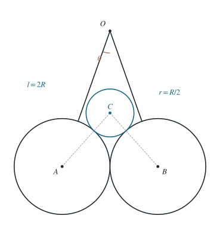

两悬球支承第三球的两类平衡构形
由三球接触几何与力平衡求分离支，再以单侧接触力判断贴合支的存在区间。
1 题目
1.1 物理情境
相同的下方球 各有质量 、半径 ；它们分别由长 的轻绳悬挂于同一点 。在两球上方放置一较小的球 ，质量 、半径 。
1.2 物理过程
三球在同一竖直对称平面内达到静力平衡，两个下球可以互相接触，也可以分开。每根绳与竖直方向的夹角记作 。
1.3 已知参数和理想化假设
；球面光滑，绳沿各大球的球心连线方向连接至球面上端，故 （这里 也记各大球球心）。绳质量和球面变形可忽略。
1.4 求解目标
讨论平衡构形中 与质量比 的关系，并确定在什么范围内存在下球接触支、分离支或无平衡。

图中取 ，所以 ；同时 。
2 思路与提示
两个下面的球可以彼此分开，也可以相互接触。分别建立这两类平衡构形，并检查接触条件。
3 解答展开 / 收起
3.1 建立两球分开时的几何关系
令从下球球心 指向小球球心 的线段与竖直方向夹角为 。 的水平坐标绝对值为 ，而 ；由同一水平投影得到
设每处 接触的法向力大小为 ，两根绳的张力均为 。小球 竖直受力平衡给出
3.2 对一颗下球列两个方向的平衡方程
在两大球未接触时， 对 的法向力向外且向下。水平与竖直方向分别有
把第（1）式代入水平式，得 ；再把第（2）式代入竖直式，消去 ，得到
第（1）、（4）式两边平方相加，使用 ，解出分离构形的角度：
3.3 检验下球不可互相穿透的条件
两大球的球心间距为 ，故其表面不重叠要求 。把第（5）式代入并整理，得到
在 内，第（5）式给出一种两下球分开的平衡支；随着 增大， 降至两球接触角。
3.4 再检验两下球互相接触的平衡支
若 接触，则 强制
令两下球之间的接触力大小为 。小球平衡仍给出 。下球的竖直方程给 ，水平式则改为 。代入第（7）式，可得
接触力只能推不能拉。第（8）式要求 ，等价于 。故 还有 的贴合支； 时两支合并且 ； 时在给定几何与光滑接触模型中不存在平衡。
4 方法与讨论
这类多接触问题不能先假定所有接触始终存在。应分别解“分离”和“贴合”两个受力系统，再以几何不穿透与接触力非负检验解。若误把绳长 当作 到球心的距离，临界角和质量比都会错误。